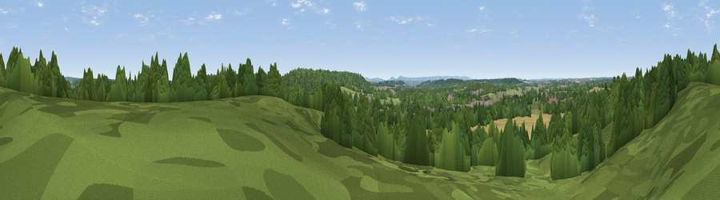

Viewpoint near Hermitage
#38106 in England · top 60% of its area beats it · near HermitageWhere it is
The exact computed spot (SU 50475 73375). Click the marker for map links.
The view, rendered

A 360° render of this exact spot computed from the terrain model, tree cover and land cover — summer colours, afternoon light, calibrated against photographs of famous viewpoints. Real trees, hedges and buildings will differ in detail.
The panorama
Grey silhouette: terrain skyline in each direction (720 bearings, Earth curvature and refraction included). Dashed green: skyline with trees (+15 m) and buildings (+8 m) as obstacles. Blue strip: how far the ground is visible on each bearing.
Where the view opens
Wedge length = distance to the farthest visible ground on that bearing (vegetation-aware). Rings at 10, 25 and 50 km.
What fills the view
60% woodland · 21% cropland · 14% grassland · 4% built-up
Angular shares of the visible panorama (visual magnitude), not map area. Landscape diversity 0.45 (0–1 Shannon).
Key numbers
More beautiful places nearby
The staircase of upgrades: each row has a higher view potential than everything closer. Driving times are estimates from straight-line distance, calibrated against real road routing — check an actual route before setting out.
| Place | Direction | Drive | Score |
|---|---|---|---|
| Viewpoint near Cold Ash | S · 4 km | ~10 min | 34.1 |
| Viewpoint near Thatcham | SSE · 5 km | ~11 min | 36.5 |
| Viewpoint near Upper Bucklebury | SSE · 7 km | ~14 min | 36.9 |
| Viewpoint near Compton | NNE · 7 km | ~14 min | 44.3 |
| Several Down | N · 9 km | ~18 min | 52.1 |
| Viewpoint near Compton | NNE · 10 km | ~19 min | 64.1 |
| Viewpoint near Ecchinswell | S · 16 km | ~29 min | 65.7 |
| Watership Down | S · 17 km | ~29 min | 71.4 |
51.45711, -1.27492 · source: screening · position refined by local search. Computed location — check access rights before visiting.